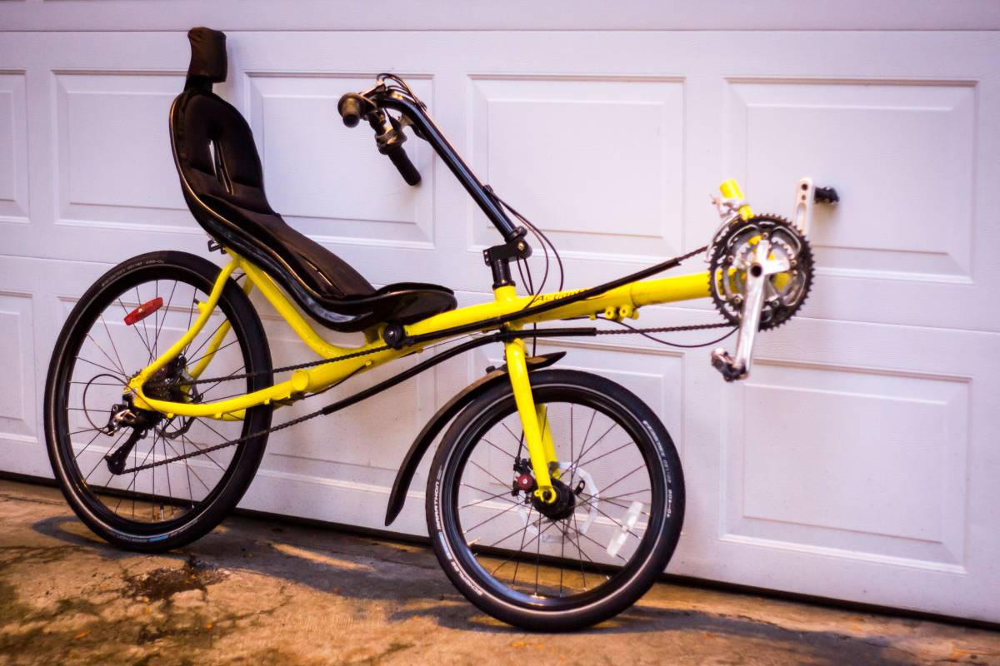

Table of Contents
Went ahead with buying a bikes direct bike over a used bike. Why?
- Wanted a compact frame. Closer the better, I feel like. Shortening front stem while reducing reach would lead to twitchier handling.
- Cassette and not free-wheel
- Simpler shifters and brakes. Even though cheap brifters should be strong enough.
- New parts. Hopefully good parts.
- Don't have to wait for a used bike to match specs to come in. Don't have to drive around a bunch either.
http://www.bikesdirect.com/products/mercier/galaxy_al_xi_sc1-holiday.htm
- Says cassette
- Person says brakes flex a lot, but they look ok and will probably be reasonable. https://www.bikeforums.net/manufacturer-retailer-survey-consumer-feedback/947271-bikesdirect-com-pros-cons-budget-commuter-mercier-galaxy-sc1.html
Actual Bike Impressions
Arrived in 4 days. Ordered Thursday night. Left Texas on Friday morning, arrived Tuesday afternoon in Portland, OR. Dang. Free shipping on a $250 bike. Hopefully the bike is good still!
Need to grease quill stem, pedals still. Also tighten spokes. Tighten brakes to be upright with no wiggle, also start close to rim.
Good
- Plenty of room for wider tires with brakes
- Seat post is adjustable angle
- Brakes seem strong, not a lot of flex. Single pivot, but that's ok.
- I can actually adjust the brake on the fly!
??
- Upright positioning. I think that's ok.
- Thinner tires. Will be getting wider tiresHopefully won't get a
Bad
- Freewheel, even though page says cassette.

- Rims have paint over the braking surface, hopefully that'll wear off quickly so that I can brake when it's wet.
Recumbent
 https://portland.craigslist.org/clc/bik/d/lake-oswego-recumbent-bicycle/7005896957.html
{kind=link}
- Looks cool!
Pluses
- Faster, I read 3-8 mph.
- Seems funner, and different.
- Better in old age for neck and joints, etc.
Minuses
- Can't see over the tops of cars like a normal bike. Neither can I with a sports car. But…we're going for safe here.